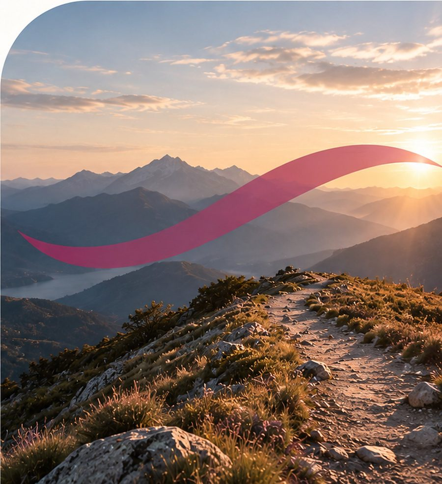
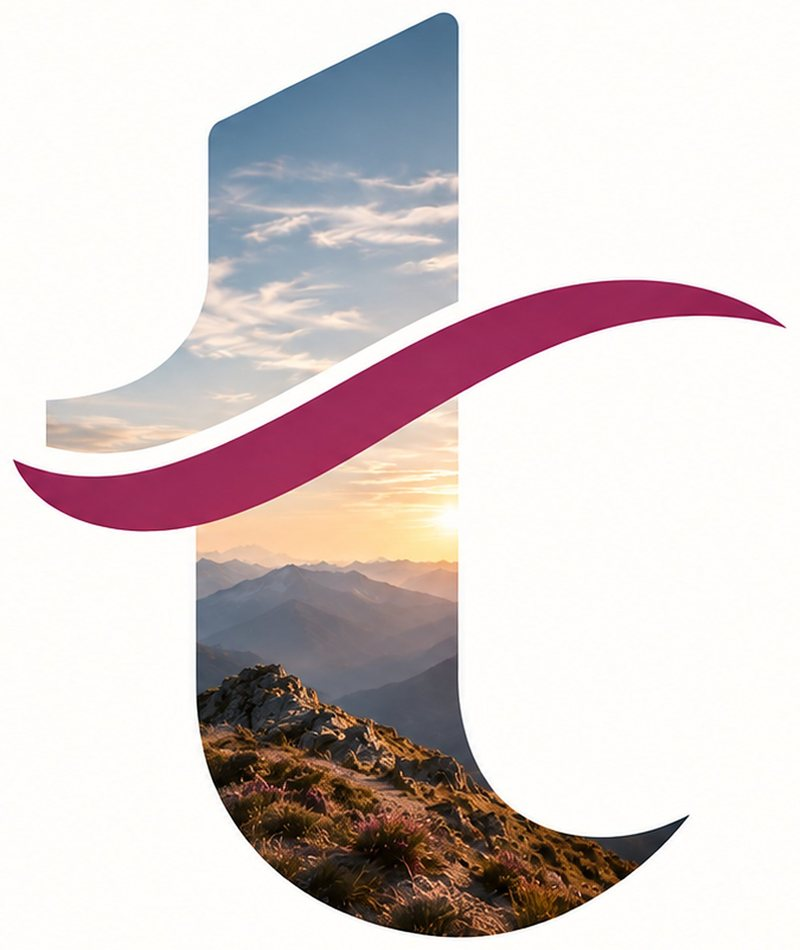

Comunicación estratégica y asuntos públicos
Trazamos el camino entre tu situación actual y el resultado que buscás.
Trabajamos con líderes, profesionales y organizaciones que saben a dónde quieren llegar y necesitan el camino trazado con precisión.
- Estrategia
- Contenidos
- Prensa
- Asuntos públicos
- Capacitación

01 El punto de partida
Entre donde estás hoy y donde querés estar, hay una distancia.
La mayoría la recorre sin mapa, sin brújula y sin equipo.
La percepción pública rara vez refleja el valor real de quien la genera.
Sin una dirección clara, la mejor trayectoria pasa desapercibida.
El caos comunicacional no se resuelve con más contenido. Se resuelve con estrategia.
02 Quiénes somos
Quiénes somos
Trace es una consultora de comunicación estratégica y asuntos públicos. Formamos equipos sólidos para cada proyecto y acompañamos a cada cliente desde el diagnóstico hasta los resultados.
Nos involucramos como parte del proyecto, no como consultores externos.

03 Servicios
Qué hacemos
Seis áreas que se contratan por separado o como un servicio integral, con un mismo equipo y una misma estrategia.
01
Estrategia y posicionamiento
Analizamos tu situación, definimos tu narrativa y trazamos el camino hacia donde querés llegar.
- Diagnóstico de comunicación y reputación
- Plan estratégico y narrativa
- Construcción de marca personal
- Posicionamiento político, institucional y empresarial
Servicio 1 de 6
02
Comunicación digital y contenidos
Gestionamos tu presencia en redes con criterio, consistencia y propósito.
- Estrategia y gestión de redes sociales
- Producción audiovisual: guion, rodaje y edición
- Diseño e identidad visual
- Gestión de comunidad y mensajes
- Sitio web y canales de contacto
Servicio 2 de 6
03
Prensa y medios
Construimos autoridad fuera de las redes, en los medios que consume tu público.
- Relación con medios y agenda de prensa
- Notas, entrevistas, radios y streamings
- Kit de prensa y vocería
- Planificación de publicidad en medios
Servicio 3 de 6
04
Asuntos públicos
Identificamos los actores clave, construimos relaciones estratégicas e incidimos en la agenda que te importa.
- Mapeo de actores clave
- Relaciones institucionales
- Seguimiento de la agenda pública y legislativa
- Estrategias de incidencia
Servicio 4 de 6
05
Capacitación y discurso
Entrenamos líderes y equipos para comunicar con claridad y autoridad en cualquier contexto.
- Media training
- Formación de equipos de comunicación
- Redacción de discursos y presentaciones
- Preparación para entrevistas y exposiciones públicas
Servicio 5 de 6
06
Medición y seguimiento
Medimos lo que importa y ajustamos el camino en movimiento.
- Objetivos y métricas desde el inicio
- Informes periódicos de resultados
- Monitoreo de medios y conversación pública
- Ajustes de estrategia con datos
Servicio 6 de 6
Proyecto puntual
Un objetivo concreto, con principio y fin: un diagnóstico, un lanzamiento, una capacitación.
Acompañamiento mensual
Un equipo dedicado que sostiene la estrategia y la ejecución mes a mes.
04 Método
Cómo trabajamos
01
Diagnóstico
Antes de proponer, entendemos. Analizamos tu situación, tus públicos y el espacio que ocupás hoy.
02
Estrategia
Un plan a medida, con objetivos claros y acciones concretas. Sin fórmulas genéricas.
03
Ejecución
Nos integramos al proyecto con compromiso, velocidad de respuesta y presencia real.
04
Seguimiento
Medimos, ajustamos y reportamos. El camino se corrige en movimiento.
05 Para quién
Para quién trabajamos
Para quienes tienen algo valioso para ofrecer y necesitan que el mundo lo vea.
Profesionales de alto perfil
Que quieren construir o consolidar su marca personal.
Organizaciones
Que necesitan posicionarse con claridad ante sus audiencias clave.
Líderes en transición
Que están redefiniendo su imagen o ampliando su influencia.
Empresas e instituciones
Que necesitan gestionar su presencia pública con estrategia.
06 Por qué Trace
Por qué Trace
Equipos que se involucran
Compromiso absoluto en cada proyecto. No delegamos el criterio y no desaparecemos.
Velocidad y presencia
Respondemos rápido y ejecutamos con precisión. En comunicación, los tiempos importan tanto como las ideas.
Orden en el caos
Tomamos una situación compleja o sin dirección y la convertimos en un camino claro y ejecutable.
Creatividad con propósito
Cada idea tiene que servir al objetivo. La creatividad sin estrategia es ruido.
Ideas que dejan huella.
07 Contacto
Contanos dónde estás hoy y a dónde querés llegar.
Coordinamos una primera conversación para entender tu caso y proponerte un camino.